- Overview
- Creating PM Tables before version 2.0.35
- Creating PM Tables in version 2.0.35 and later
- List of PM Tables
- Editing PM Table Data
- Deleting PM Table Data
- Viewing and Editing PM Table Data
- Header Properties from the Table List
- Importing CSV Files to PM Tables
- Exporting PM Tables to CSV
- Exporting PM Tables
- Importing PM Tables
- Reserved Words in PM Tables
- Accessing PM Tables from Triggers
- Querying a PM Table
- Inserting in a PM Table
- Updating a PM Table
- Deleting in a PM Table
- Using Propel classes
- Downloading CVS Files generated from PM Tables
- Saving PM Tables as Input Documents
- Accessing PM Tables in Dynaforms
Overview
PM Tables are designed for users who do not wish to go through the hassle of maintaining an external database. Even users who have external databases may find PM Tables handy for managing data which will be used in Dynaforms or Output Documents. The data in PM Tables is stored in the MySQL database wf_<workspace> (which by default is named wf_workflow), so the data can also be accessed by an external program.
Creating PM Tables before version 2.0.35
To create PM Tables, go to ADMIN > Settings > PM Tables
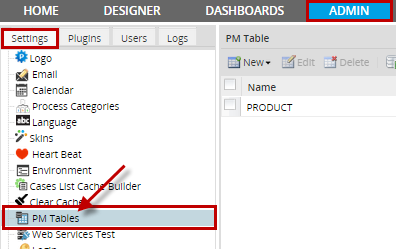
Click on New and two options will display, choose New PM Table.
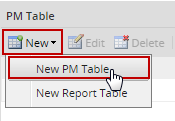
Enter all the information of the new PM Table:
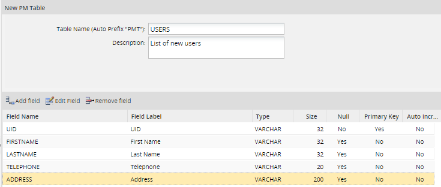
Table Information:
- Table Name: Enter the name of the new table, which will be converted into uppercase, because this is the name which will be used for the MySQL table. See the list of Reserved Words below to not use to name PM Tables.
- Description: A description or any additional information about the table.
Creating PM Tables in version 2.0.35 and later
In version 2.0.35 and later, PM Tables are created with the prefix PMT_ in their name. To create a new PM Table, go to ADMIN > Setings > PM Tables and then select New > New PM Table in the menu. In the dialog box to define the new PM Table, the label Auto Prefix "PMT" will be displayed in the Table Name field.
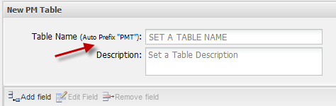
For example:
If creating a PM Table named "COUNTRY" with this prefix, the table will named "PMT_COUNTRY":
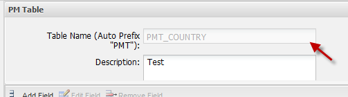
Note: In version 2.0.35 or later, PM Tables have a prefix of PMT_ in their names. Make sure to include this prefix in SQL queries when calling executeQuery() in triggers and populating Dynaform fields.
Adding Fields
To add fields click on  icon. A new row will add where information of the field must be completed:
icon. A new row will add where information of the field must be completed:

Fields:
- Field Name. A unique case-insensitive name to identify the field. Names should be 64 or less characters long and should not begin or end with numbers or spaces, nor contain the characters '\', '/' or '.'
- Do NOT name the field one of the reserved words, because they may cause conflicts with database queries. In version 2.0.34 and later, ProcessMaker checks that these reserved words aren't used.
- Field Label. The displayed label for the field, which the user will see when editing data in the table.
- Type. Fields can be one following data types:.
- VARCHAR is a string of 255 or fewer characters.
- TEXT is a string of characters which is 65,536 or fewer bytes long.
- DATE is a date in the format YYYY-MM-DD.
- INT is an integer between -2147483648 and 2147483647.
- FLOAT is a 4 byte floating point number between -3.402823466E+38 and 3.402823466E+38. Numbers are defined with 2 decimals. If more than 2 decimals are defined the number will be rounded to to the nearest integer. For instance, if the following number is entered 0.9999 it will be rounded to 1
- DOUBLE float number with double precision. It represents numbers of 64 bits. Numbers with 9 or more decimals will be rounded to to the nearest integer. For instance, if the following number is entered 0.999999999 it will be rounded to 1.
- See the MySQL manual for more information on these data types.
- Size. For VARCHAR fields, the maximum number of characters. For INT and FLOAT fields, the maximum number of digits of precision. For DATE and TEXT fields, size is not applicable.
- Null. Select if the field may be a NULL value, which means "no data".
- Primary Key. Select if the field (or a combination of fields) will hold a unique value which is used to index the table. All PM tables must contain at least one primary key.
- Auto increment. Select if the field will be automatically increased.
- Index. This column, added from version 2.8, adds the functionality to allow setting fields as index, directly from the PM Table administration interface. By selecting the field in the row of a table, this allows quick access to the records of the PM Table on the fields on which searches are frequent. Indexes can be of type Varchar or Integer other types disable this option.
- Available Version: PM 2.8
- To view indexes created on fields PM Table, access ProcessMaker's database and check the indexes of pmt_namePMTable:
- 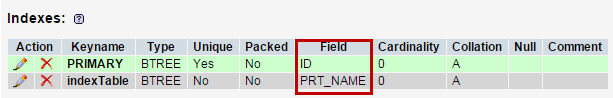
Note: Only an index can be created per PM Table, but this index can have multiple fields.
After defining each field, click on Update to finish editing the field. When all the fields in the table have been defined, click on Create to store the structure of the table.
Editing Fields
To edit a field select the field to edit and click on or just choose the filed to edit and double click on it:
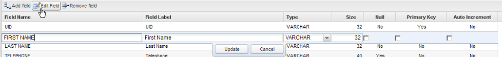
Removing Fields
To remove a field, select the field in the list and click on 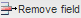 icon:

List of PM Tables
After creating a PM Table, it will be displayed in the list of available tables under ADMIN > Settings > PM Tables.

Editing PM Table Data
Choose one table and click on Edit to alter the fields in a field or change a table's name or description. All fields can be edited except the name of the table which can be edited by entering Mysql.
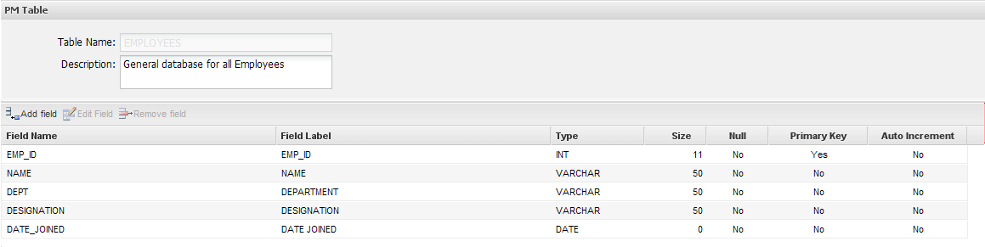
Fields can be added, edited and removed. If the structure of the table is edited, all data will be lost.
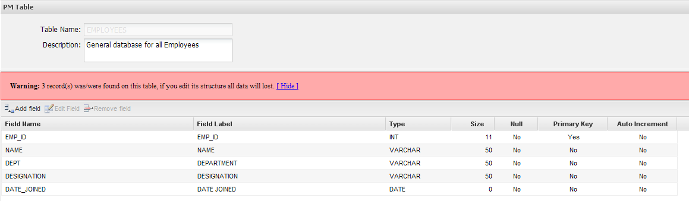
Deleting PM Table Data
One or more tables can be deleted at the same time, check all the tables to delete and click on Delete:
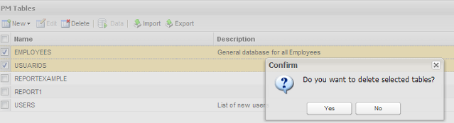
Viewing and Editing PM Table Data
To view the data stored in a PM Table, select the table to view and edit, and click on the Data:
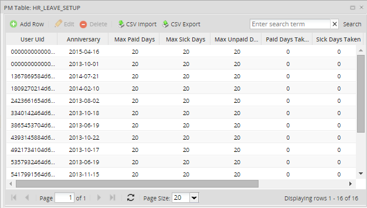
To add a new row to a PM Table, click on the Add Row link at the top of the table. Click on the Edit and Delete links to edit or delete a record in the PM Table. Fields can also be edited or deleted by clicking over the field:

Searching data inside a PM Table
Available Version: From 2.5.2 on
In previous versions of ProcessMaker, if you needed to search some information inside a table data, you had to do it by searching them manually, this was a tiresome work specially if you need to search information inside a table with plenty of data inserted.
Now you can search for specific values when displaying PM Tables by the search box added inside Data window. You can search any kind of text but it is not possible to use search criteria like <, >, between, like, etc
Go to ADMIN > Settings > PM Table, select a table and choose Data from the menu, on the upper right side of the window you will find the search text:
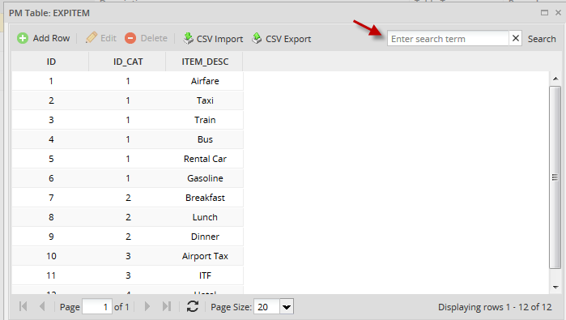
For example, in the example below we will search the item Gasoline, write the text and then press Enter:

If you want to list the complete data, leave the search box blank and press Enter.
Note: This search is also included inside Report Tables data.
Header Properties from the Table List
When you access into the main list of tables (ADMIN > Settings > PMTables) you will see 5 rows (Name, Description, Table Type, Record and Process), if you place your moues over one of the rows, you will find a down-arrow:
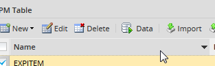
Click on the arrow to display the available options. Note that all rows have the same options:
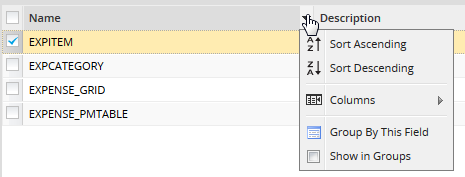
Where:
- Sort Ascending: Choose this option to sort table names in alphabetically order from A-Z.
- Sort Descending: Choose this option to sort table names in alphabetically order from Z-A.
- Columns: To prevent careless users from accidentally editing or deleting a record or seeing a particular column of data, select the columns which will be displayed.

- Group by this field: It groups fields depending on the row selected. For instance if you choose this option from the Name row, the order will be:
-
- 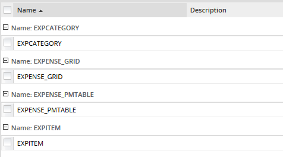
- Show in groups: When you select the previous version, automatically this field is checked:
-
- 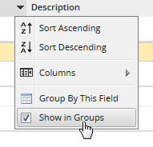
-
- If you want to restore the list to its original view, uncheck this option.
Importing CSV Files to PM Tables
In version 1.2-2552 and later, data can be imported into PM Tables from a CSV (comma separated values) file.
Format of CSV Files
The CSV file should be a plain text file containing the field values separated by , (commas) or ; (semicolons). List the field values in the same order as they appear in the PM Table, so the first comma separated value will go into the first field, the second value in the second field, and so on. The first line of text in the CSV file will be ignored, because it is assumed to contain the column headers (field names). All text should be in the UTF-8 character set.
Each record in the CSV file should be on a new line. If a field contains a new line or if it contains spaces at the beginning or the end of the text, it should be enclosed in " (double quotation marks). If a field contains a ", then is should be doubled as "" and the whole field enclosed in " (double quotation marks). If using , (commas) to separate fields, then all fields containing , should also be enclosed in " (double quotation marks). For example, Say "hello," and go should be: "Say ""hello,"" and go". Likewise, If using ; (semicolons) to separate fields, then all fields containing ; should also be enclosed in " (double quotation marks).
Date fields should use the format YYYY-MM-DD, such as 1999-01-01 or 2020-12-31. Make sure to include leading zeros if the month or day is less 9 or less. Datetime fields should use the format YYYY-MM-DD HH:MM:SS, such as 1999-01-01 01:01:01 or 2020-12-31 23:59:59. Make sure to include leading zeros if the hour, minutes or seconds is 9 or less. If a date or datetime field is empty, it will be inserted in the PM Table as 0000-00-00 or 0000-00-00 00:00:00. If a datetime field lacks the hour, minutes or seconds, they will automatically be inserted as 00.
Decimal numbers should use a . (dot) to separate decimal digits and should have no thousands separator, such as 73642632.89 and -99372.7634. Boolean fields should use 1 for true and 0 for false. An empty field or text will be interpreted as 0.
Note: Boolean fields are actually integer fields in PM Tables any integer value is allowed in boolean fields.
For example, if importing the following spreadsheet into a PM Table:
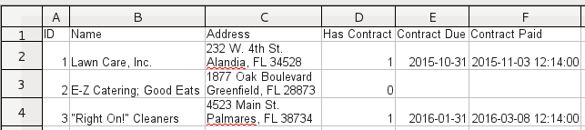The CSV file should have the following content:
1;Lawn Care, Inc.;"232 W. 4th St.
Alandia, FL 34528";1;2015-10-31;2015-11-03 12:14:00
2;"E-Z Catering; Good Eats";"1877 Oak Boulevard
Greenfield, FL 28873 ";0;;
3;"""Right On!"" Cleaners";"4523 Main St.
Palmares, FL 38734";1;2016-01-31;2016-03-08 12:14:00
Notice that the new lines in the Address field are enclosed in double quotation marks, as well as the " and ; in the Name field. Note that new lines in fields in PM Tables appear as normal spaces when viewed in the ProcessMaker interface, but the new lines still exist in the database. Also note that the only way to include new lines in the fields in PM Tables is to import them in CSV files, because they can not be inserted using the graphical data editor in the ProcessMaker interface.
The CSV file can have more fields than are contained in the PM Table, but it cannot have fewer fields than the PM Table. Even if a field is empty, it should have a comma or semicolon to indicate that there is an empty value, as shown in record 2 in the example above. Autoincrement fields should also be included in the CSV file.
Records can be appended to an existing PM Table, so it is not necessary to overwrite the entire PM Table when importing a CSV file. If the primary key for a record in the CSV file does not already exist in the PM Table, that record will be appended to the PM Table. However, a bug currently prevents a CSV file from being imported if the file contains a primary key which already exists in the PM Table. The only way to update an existing record is to first manually delete the record in the PM Table, and then import the CSV file with a new version of that record. For example, in the example above, the ID field is the primary key. If the PM Table already contains a record with an ID of 2, then that record will have to deleted, before importing the above CSV file.
Most spreadsheet programs have options to automatically export spreadsheets in the CSV format used by PM Tables. For example, if using LibreOffice or OpenOffice, go to File > Save As and select the option "Text CSV (.csv)" in the format dropdown box. Also mark the "Edit filter settings" checkbox and then click on Save.

A "Export Text File" dialog box will appear to select options for exporting the CSV file. Set the Character set to "UTF-8", the File delimiter to , or ;, and the Text delimiter to ". Finally, mark the Save cell content as show checkbox and click on OK to save the CSV file.
If the PM Table contains a date field, in LibreOffice or OpenOffice the cells containing dates should be set to use the custom YYYY-MM-DD format. Likewise, cells containing datetimes should be set to use the custom YYYY-MM-DD HH:MM:SS format.
After creating a CSV file, it can be imported into a PM Table by going to ADMIN > Settings > PM Tables. Find the desired table in the list and click on its Data button. At the top of the table, click on the CSV Import button.

Then select the CSV file and click the Upload button.
A message should display indicating that the CSV file was imported correctly and the contents of the PM Table will be reloaded with the new data in it.
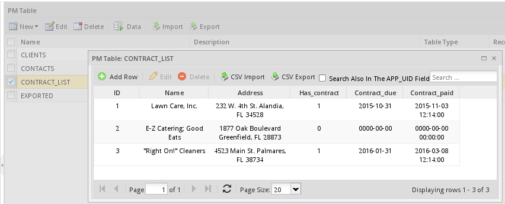
Exporting PM Tables to CSV
To export a CVS file into a PM Table, go to ADMIN > Settings > PM Tables. Find the desired table in the list and click on its Data link. At the top of the table, click on the link CSV Export choose the values separated by commas or semicolons and click on Export:
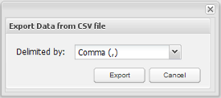
The file will download on the user's computer.
Exporting PM Tables
To export a PM table from inside the ProcessMaker interface, go to ADMIN > Settings >PM Tables select the desired table and click on the Export link at the top of the list. Select whether to export the table's Schema (structure), the Data, or both.
Finally, click on the Export link at the bottom, to generate a .pmt file, which can be downloaded and saved.
If planning on exporting PM table(s) and all their data to another installation of ProcessMaker, select both the schema and data. If planning on exporting the data to an external spreadsheet or database, then only select a single PM Table and only export its data (not it's schema).

Note: More than one PM table can be exported at the same time.
Importing PM Tables
To import a PM table from inside the ProcessMaker interface, go to ADMIN > Settings >PM Tables click on the Import link at the top of the list and select a .pmt file. Finally click on Upload button

If the PM table will be replaced with another mark the Overwrite if exists? checkbox.
Reserved Words in PM Tables
From version 2.0.43 on, ProcessMaker checks that reserved words are not used in the name of PM Tables and their fields, since these words may cause conflicts with database queries. If using a prior version of ProcessMaker, make sure that the following reserved words are not used for the names of tables or fields.
Do NOT use the following MySQL reserved words as field names for PM Tables:For more information about reserved words please check this documentation. Also do NOT use the following PHP reserved words as field names for PM Tables:
Also do NOT use the following reserved words in ProcessMaker:
Accessing PM Tables from Triggers
It is possible to use PHP code in triggers to read and manipulate the information in PM Tables. Either use the executeQuery() function or Propel classes to access PM Tables.
Querying a PM Table
Use a SELECT statement to read from a PM Table
For example, a PM Table called "PMT_CONTACTS", which contains the fields "ID", "FIRSTNAME", "LASTNAME" and "BIRTHDAY" can be accessed with executeQuery().
To read a single row from the PMT_CONTACTS table:
Note: It is not necessary to specify the database, since executeQuery() uses by default the wf_<workspace> database where the PM Tables are stored.
To search for a value which was entered in a Dynaform field by a user, make sure to pass it through mysql_real_escape string() to escape any problematic characters and to prevent SQL injection attacks. Assign the value to a normal PHP variable, so it can inserted inside the query string. If the value is a string of characters or a datetime, it needs to be enclosed in quotation marks.
This example search for all the contacts whose last or first name contains the text entered in the "nameSearch" field in a Dynaform. The results from the database query are assigned to a grid named "searchResults" which contains the "firstName", "lastName" and "birthday" fields. The fields returned by the database query are renamed using AS so they match the names of the fields in the grid. The search uses LIKE and the wildcard % to be able to search in the middle of the words. The text is converted to lower case with PHP's mb_strtolower() function and MySQL's LOWER() function, so the search can be case insensitive.
//the ProcessMaker database uses the UTF-8 character set:
$name = mb_strtolower($name, "UTF-8");
$query = "SELECT FIRSTNAME AS firstName, LASTNAME AS lastName, BIRTHDAY AS birthday
FROM PMT_CONTACTS
WHERE LOWER(FIRSTNAME) LIKE '%$name%' OR LOWER(LASTNAME) LIKE '%$name%' ";
@=searchResults = executeQuery($query);
A subsequent Dynaform in the process containing the "searchResults" grid will display the results of the database search.
Inserting in a PM Table
Use an INSERT statement to insert a new row into a PM Table.
For example, to insert a row in the "PMT_CONTACTS" table:
if ($result == 0){
$g = new G();
$g->SendMessageText("Could not insert a new record in the PMT_CONTACTS table.", "ERROR");
}
Exception and examine the @@__ERROR__ variable in the Debugger.
throw new Exception("Could not insert a new record in the CONTACTS PM table.");
}
The executeQuery() function returns the number of inserted rows, so if it returns 0, then the insert action failed.
To insert a new row into the "PMT_CONTACTS" table, using data from Dynaform fields named "id", "firstName", "lastName", "birthday", create a trigger which fires after the Dynaform with the following code:
$id = @%id;
$firstName = mysql_real_escape_string(@@firstName);
$lastName = mysql_real_escape_string(@@firstName);
$birthday = mysql_real_escape_string(@@birthday);
$insert = "INSERT INTO PMT_CONTACTS (ID, FIRSTNAME, LASTNAME, BIRTHDAY)
VALUES ($id, '$firstName', '$lastName', '$birthday')";
if (executeQuery($insert) == 0){
$g = new G();
$g->SendMessageText("Could not insert new record in the PMT_CONTACTS table.", "ERROR");
}
Note: The value of the ID field is not enclosed in quotation marks because it is a number. By default datetime fields in Dynaforms save their values in the same YYYY-MM-DD HH:MM:SS format used by MySQL datetime fields, so they can be inserted directly in the PM Table without being transformed.
Updating a PM Table
Use an UPDATE statement to update information in a PM Table. Remember to add a WHERE clause so that it doesn't update all the rows in the table.
For example, to update an existing row in the PMT_CONTACTS table:
if ($result == 0){
$g = new G();
$g->SendMessageText("Unable to update record in the PMT_CONTACTS table.", "ERROR");
}
This example updates the PM Table with the fields "firstName", "lastName" and "birthday" from a Dynaform:
$firstName = mysql_real_escape_string(@@firstName);
$lastName = mysql_real_escape_string(@@firstName);
$query = "UPDATE PMT_CONTACTS SET FIRSTNAME='$firstName', LASTNAME='$lastName' WHERE ID=$id";
$result = executeQuery($query);
if ($result == 0) {
$g = new G();
$g->SendMessageText("Unable to update record in the PMT_CONTACTS table.", "ERROR");
}
Deleting in a PM Table
Use an DELETE statement to delete a row in a PM Table. Remember to add a WHERE clause so that it doesn't delete all the rows in the table.
To delete a row from the PMT_CONTACTS table:
if ($result == 0){
$g = new G();
$g->SendMessageText("Did not delete any records in the PMT_CONTACTS table.", "ERROR");
}
Using Propel classes
PM Tables can also be accessed through Propel classes in triggers. For instance, the same table could be accessed through its PHP class name of "Contacts". (Remember that class names are case sensitive). This example inserts a new record in the contacts PM Table:
$oContacts->setId(23);
$oContacts->setFirstname('John');
$oContacts->setLastname('Doe');
$oContacts->setBirthday(@@field1);
$oContacts->save();
See the Propel documentation for more information on how to access tables through Propel classes.
Downloading CVS Files generated from PM Tables
Users who have the PM_SETUP permission in their role can easily obtain a CSV (comma-separated-value) file for a PM Table, by going to ADMIN > Settings > PM Tables. Nonetheless, normal production users with a role like PROCESSMAKER_OPERATOR can't access the ADMIN menu.
To workaround this problem, a Trigger can be used to generate a CSV file from a PM Table and store that CSV file in the Process Files Manager's public directory, where it can be accessed through a link in a Dynaform.
Create a Trigger with the following code to query the PM Table and create a CSV file in the public directory:
$path = PATH_DATA_PUBLIC . @@PROCESS . PATH_SEP;
if (!is_dir($path)) {
mkdir($path, 0770) or die("Error creating directory '$path'");
}
$sFile = tempnam($path, $tableName) . '.csv';
$fFile = fopen($sFile, 'w+') or die("Error opening file '$sFile' for writing!");
$query = "SELECT * FROM $tableName";
$table = executeQuery($query);
foreach ($table as $record) {
$line = '';
foreach ($record as $field=>$value) {
$line .= ($line=='' ? '' : ', ') . '"' . $value . '"';
}
fwrite($fFile, $line . "\n");
}
fclose($fFile);
$filename = pathinfo($sFile, PATHINFO_BASENAME);
@@linkUrl = '../' . @@PROCESS . '/' . $filename;
@@linkLabel = $filename;
Then, create a Dynaform with a link field named "linkFile" and two hidden fields named "linkUrl" and "linkLabel". Add the following JavaScript to the Dynaform to set the URL and label for the link field:
getField("linkFile").innerHTML = getField("linkLabel").value;
Set the Trigger to fire before the Dynaform, so the file will be ready for download and the case variables @@linkUrl and @@linkLabel will already be set when the Dynaform is displayed. Then, the user can click on "linkFile" and download the CSV file.
Saving PM Tables as Input Documents
The following example queries a PM Table to create a comma separated value (CSV) file, which is then uploaded as an Input Document in the current case. Users who can access the current case can then download the CSV file and import it into any spreadsheet program, such as Excel or OpenOffice Calc. Unlike the previous example which placed the CSV file in the public directory, this CSV file will be placed in a restricted place so that only users who have access to the current case can download it.
First, create an Input Document in the process and get its UID. In this example, the Input Document has the UID "86062325056a02c39e62e51079553933".
Then, add the following trigger to the process to query the PM Table and generate a CSV file. In this example, a PM Table is queried which is named PMT_CONTACTS, which has the ID, FIRSTNAME, LASTNAME, ADDRESS and BIRTHDAY fields.
$InpDocUid = '86062325056a02c39e62e51079553933'; //set to the UID of your input document
$query = "SELECT * FROM $pmTable";
$aRows = executeQuery($query);
if (!is_array($aRows) or count($aRow) == 0) {
die("Unable to query PMT_CONTACTS or table is empty.");
}
$aOut = array();
$row = '';
//create the first row in the CSV file which has the field names
foreach (array_keys($aRows[1]) as $fieldName) {
$row .= (!empty($row) ? ';' : '' ) . '"' .$fieldName. '"';
}
$aOut[] = $row . "\n";
foreach ($aRows as $aRow) {
$row = '';
foreach ($aRow as $fieldVal) {
$row .= (!empty($row) ? ';' : '' ) . '"' .$fieldVal. '"';
}
$aOut[] = $row;
}
$d = date('Y-m-d_H:i:s') . substr(microtime(), 1, 9);
$filename = sys_get_temp_dir() . "/$pmTable_$d.csv";
file_put_contents($filename, implode("\n", $aOut)) or
die("Unable to write to file '$filename'.");
$params = array (
'ATTACH_FILE' => '@' . $filename,
'APPLICATION' => @@APPLICATION,
'INDEX' => @@INDEX,
'USR_UID' => @@USER_LOGGED,
'DOC_UID' => $InpDocUid,
'APP_DOC_TYPE' => 'INPUT'
);
ob_flush();
$url = "http://{$_SERVER['SERVER_NAME']}:{$_SERVER['SERVER_PORT']}/sysworkflow/en/neoclassic/services/upload";
$ch = curl_init($url);
// curl_setopt($ch, CURLOPT_VERBOSE, 1); //Uncomment to debug
curl_setopt($ch, CURLOPT_RETURNTRANSFER, 1);
curl_setopt($ch, CURLOPT_POST, 1);
curl_setopt($ch, CURLOPT_POSTFIELDS, $params);
// curl_setopt ($ch, CURLOPT_SSL_VERIFYHOST, 1); //Uncomment for SSL
// curl_setopt ($ch, CURLOPT_SSL_VERIFYPEER, 1); //Uncomment for SSL
$response = curl_exec($ch);
curl_close($ch);
unlink($filename);
$g = new G();
$g->SendMessageText($response, 'INFO');
Make sure to change the $pmTable and $InpDocUid to the name of the PM Table and the unique ID of the Input Document, respectively. This trigger code generates a temporary CSV file which contains the content of the PM Tabble. It then use the uses the /services/upload service to upload the temporary CSV file to the Input Document. It then deletes the temporary file and displays the response message from the services/upload service
Accessing PM Tables in Dynaforms
PM Tables can be integrated into Dynaforms in three ways:
- Using SQL SELECT queries in individual Dynaform fields
- Creating new Dynaforms based upon the fields in a PM Table
- Manually adding Read/Write Access to PM Tables in Dynaform Fields
The first method provides read-only access to the PM Table, whereas the latter two allows entered data to be added as a record in the PM Table.
Note: From version 2.0.35 If a querying to a PM Table to populate any field of a Dynaform is required, the table must be written with the PMT prefix, otherwise queries won't work.
Querying PM Tables in Dynaform Fields
Dynaform fields can obtain read-only access to PM Tables with a standard SQL SELECT statement. Since PM Tables are stored in the wf_<workspace> database, the SQL Connection property can be left blank, since it will select that database by default if blank. In the SQL property, put the SELECT statement.
Populating lists of options
If querying a PM Table to populate a list of options in a dropdown box, listbox, suggest box, radiogroup or checkgroup, then the SQL SELECT statement should return two fields. The first is the value field (which should be unique) and the second is the label field (which is what is displayed to the user).
For example, a dropdown box could populate its list of options with the last names found in the PMT_CONTACTS table used in the previous example. Its SQL property would be:
SELECT ID, LASTNAME FROM PMT_CONTACTS
and its complete XML definition would look something like this:
<![CDATA[SELECT ID, LASTNAME FROM PMT_CONTACTS]]>
<en>Select Contact <option name=""></option>
</en>
</SelectContact>
To display more than one field in the label, use the CONCAT() function to combine more than one field. For example, to combine the FIRSTNAME and LASTNAME fields in the label:
Populating ordinary fields
To query a PM Table in order to populate the value of a textbox, currency box, percentage box, textarea, or hidden field, use an SQL SELECT statement which only returns one field from one record. If more than one record is returned, only the first record will be used.
For instance, to select the contact whose ID is 907:
Using Variables in SQL Queries
There are two ways to use variable(s) in a query to a PM Table. Either use a system or case variable which has been passed to the Dynaform as a hidden field or reference another field in the Dynaform which has a dependent field relationship with the current field.
System or case variables in SQL Queries
A system or case variable can be used in the SQL query to a PM Table. System variables are created automatically by ProcessMaker, but case variables either have to be created from a field in a previous Dynaform (which was submitted) in the case or defined in a previous trigger in the case. System and case variables can be passed to the current Dynaform by creating a hidden field with the same name as the case variable.
For example, to use the case variable @@ContactId in an SQL query to a PM Table, first create a hidden field named "ContactId" in the Dynaform. Remember the field names are case sensitive, so the field name has to be spelled exactly like the case variable.
Then, add an SQL query to a field which references the case variable. To enclose the value of the variable inside quotation marks, reference it as @@ContactId.
If the variable is a number, then reference it as @#ContactId to not enclose it in inside quotation marks:
SQL Queries with Dependent Fields
If a dependent field relationship has been established with another field, then the value of the independent field can be references as a variable in the SQL query. Whenever the value of the independent field changes in the Dynaform, the query will be reexecuted and the dependent field will be repopulated.
In this example, the value in the "ContactId" field will determine which contact's full name is displayed in a textbox:
Or if the ID is a number:
Populating Dynaform Grids
In order to display a PM Table in a Dynaform grid, first create a grid form which has the field names which are the same as those found in the PM Table. Then, embed that grid form in a master form. Finally, create a trigger which will use executeQuery("SELECT ...") to return an array of records from the PM Table. Assign that array of records to a case variable which has the same names as the grid object in the master Dynaform. Set the trigger to fire before the master Dynaform is displayed.
For example, the following trigger code would populate a grid object named "ContactsGrid":
If the field names in the grid form are not named "ID", "FIRSTNAME", "LASTNAME" and "BIRTHDAY", then use AS to rename the returned fields from the PM Table to the names used in the grid form. For example, the fields from the CONTACTS table could be renamed as "ContactID", "ContactFName", "ContactLName" and "ContactBirthday", respectively:
"LASTNAME AS ContactLName, BIRTHDAY AS ContactBirthday FROM CONTACTS");
To write the changes in a Dynaform grid to a PM Table, set a trigger to fire after the Dynaform with code to delete all the contents of the old PM Table. Then write each row from the grid into the new PM Table. For example:
foreach (@=ContactsGrid as $row) {
executeQuery("INSERT INTO CONTACTS (ID, FIRSTNAME, LASTNAME, BIRTHDAY) VALUES " .
"('{$row['ContactID']}', '{$row['ContactFName']}', '{$row['ContactLName']}', '{$row['ContactBirthday']}')");
}
When inserting PHP variables into double quoted strings (as in the example above), remember to enclose the variable names inside curly braces {} to access elements inside associative arrays.
Creating Dynaforms based on PM Tables
From version 1.6-3862 on, Dynaforms can be created based upon the fields in a PM Table. All the fields in the PM Table become fields in the Dynaform. The benefit is that the fields are automatically configured with write access to the PM Table. When the Dynaform is submitted, a new record is automatically added to the PM Table, with the data entered into the Dynaform.
First, create a PM Table with all the fields that will be used in needed in the Dynaform. After creating the PM Table, go to PROCESS > Dynaforms to view the list of Dynaforms. Click on the New link at the top of the list to create a new Dynaform. Rather than the Blank Dynaform option, select the PM Table Dynaform option:
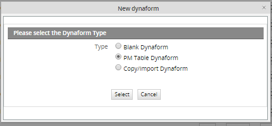
Then, select which PM Table the Dynaform structure will be based upon:
Then, select the variables to use as indexes to relate the Dynaform to records in the PM Table. Now, click on Save to save the new Dynaform without editing or Save & Open to save it and immediately start editing it.
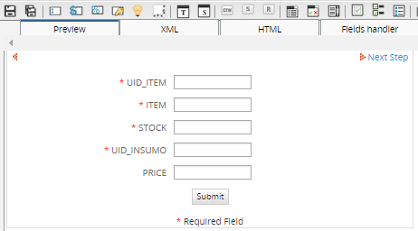
The Dynaform is created by default with all the fields from the PM Table. Dynaform fields can be removed or added as required, but remember that any added fields in the Dynaform will not be stored in the PM Table.
Read/Write Access to PM Tables in Dynaform Fields
As of version 1.2-2552, it is possible to obtain read and write access to a single record in a PM Table through a Dynaform. A field in a PM Table record can be associated with a Dynaform field by editing its XML definition. The data entered in the Dynaform field will be automatically updated in the PM Table.
In order to associate fields in a Dynaform with the fields from a single record in a PM Table, first go to the PM TABLES tab under ADMIN (formerly called SETUP). Select the desired PM Table from the list and click its Edit link. Then, look in the address of your web browser to find the UID of the PM Table. For instance, in the URL:http://localhost/sysworkflow/en/green/additionalTables/additionalTablesEdit?sUID=8978302234afeaeff4f2773061370232
Copy the UID of the PM Table. Then, open a Dynaform and go to the XML tab to directly edit the XML code. Add a line near the top to establish a pmconnection to the PM Table. The pmconnection should be given a name which will be used to identify it when used in later elements of the Dynaform. Use the XML attribute pmtable to specify the UID of the PM Table and the XML attribute keys to specify the primary key(s) of the record to be retrieved from the PM Table:
In this example a pmconnection called "CONTACTS_CONNECTION" is defined for the record whose primary key is 909.
Always enclose the primary key value in quotes, even if its data type is not a string. If the primary key is a date, use the format "YYYY-MM-DD".
If a PM Table contains multiple primary keys, the key values can be separated by pipes (|) or by commas (,). List the values in the same order which the fields appear in the PM Table. For instance, if a PM Table has a primary key which is a combination of the fields "name", "birthday" and "income":
The keys attribute can also be set to a variable referring to another field in the Dynaform, however, the value of the variable will only be read when the Dynaform is first displayed, so it must be the default value of the field or a value set by a trigger beforehand. (Setting the value of the field with JavaScript will not work, since JavaScript code is run after the Dynaform is displayed.) For example, if trigger is fired beforehand with code:
and a Dynaform contains a hidden field named "SelectID", then the following pmconnection could refer to @#SelectID:
After creating a pmconnection, its data can be accessed from a Dynaform field by using the XML attribute pmconnection to specify the name of the pmconnection and the XML attribute pmfield to specify the name of the field in the PM Table which will be associated with the field in the Dynaform:
<DYNAFORM-FIELD-NAME ... pmconnection="PM-CONNECTION-NAME" pmfield="PM-FIELD-NAME"> ... </DYNAFORM-FIELD-NAME>
For example, here the Dynaform field "ContactId" is associated with the "ID" field in the CONTACTS table:
mode="edit" pmconnection="CONTACTS_CONNECTION" pmfield="ID">
<en>ID</en>
</ContactId>
It is possible to have any number of different pmconnections to PM Tables in a Dynaform. The pmconnections can be different queries to the same PM Table and/or queries to different PM Tables.
For instance, it this example, Dynaform fields are associated with two different pmconnections:
<COMPANIES_CONNECTION type="pmconnection" pmtable="347a7b790cd119139294a84392bf709c" keys="ACME" />
<FirstName type="text" maxlength="64" validate="Any" required="0" readonly="0" size="50"
mode="edit" pmconnection="CONTACTS_CONNECTION" pmfield="FIRSTNAME">
<en>First Name</en>
</ContactId>
<LastName type="text" maxlength="64" validate="Any" required="0" readonly="0" size="50"
mode="edit" pmconnection="CONTACTS_CONNECTION" pmfield="LASTNAME">
<en>Last Name</en>
</LastName>
<Company type="text" maxlength="64" validate="Any" required="0" readonly="0" size="50"
mode="edit" pmconnection="COMPANIES_CONNECTION" pmfield="CO_NAME">
<en>Company Name</en>
</Company>
At this point it is not possible to obtain use a pmconnection to obtain read/write access to grids or query more than one record at a time, but that functionality will come in future versions of ProcessMaker.
It is not possible to automatically create new records in the PM Table using a Dynaform. If a new record in the PM Table needs to be created every time the Dynaform is displayed, fire a trigger before the Dynaform is displayed to create a new blank record, then use the Dynaform to fill the values in that blank record.
In this example, a trigger is used to create a new record in the PM Table before the Dynaform is displayed. A primary key is generated for the new record by adding one to the highest current primary key in the PM Table:
The Dynaform has a hidden field named "NewID" and a pmconnection named "CONTACTS_CONNECT":
<NewID type="hidden" mode="edit" btn_cancel="Cancel"/>
The hidden field is needed to pass the case variable to the Dynaform, so its value can be accessed by the pmconnection.